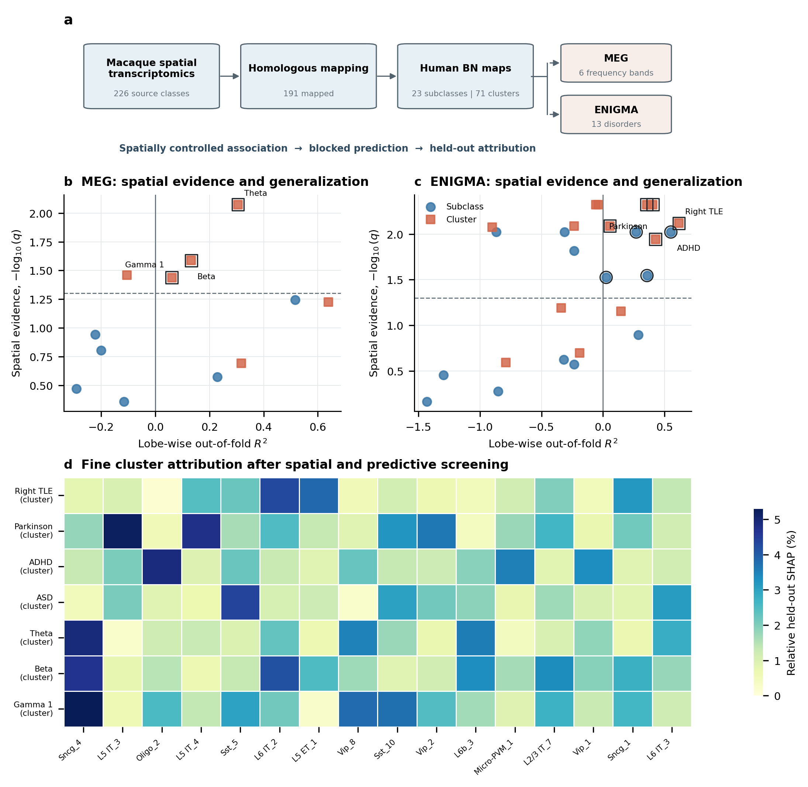
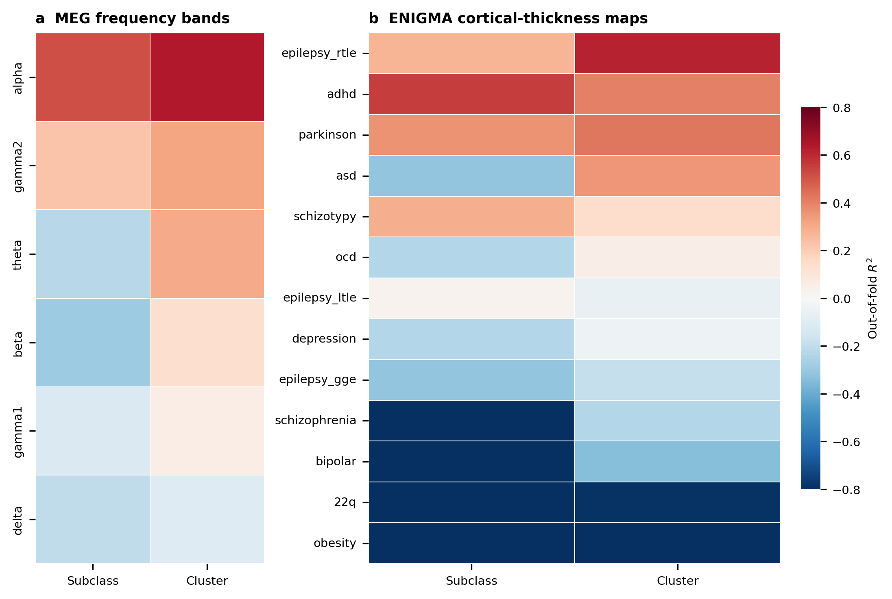
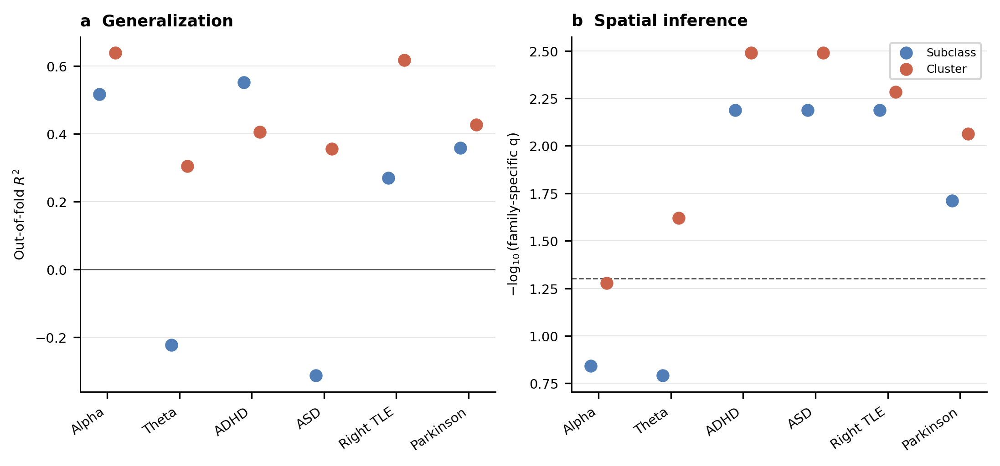
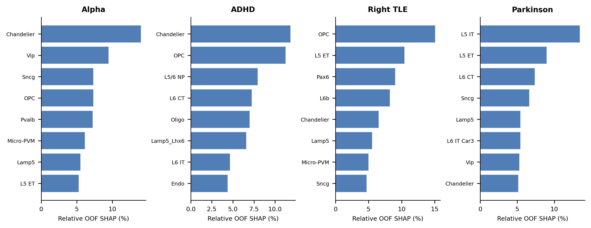
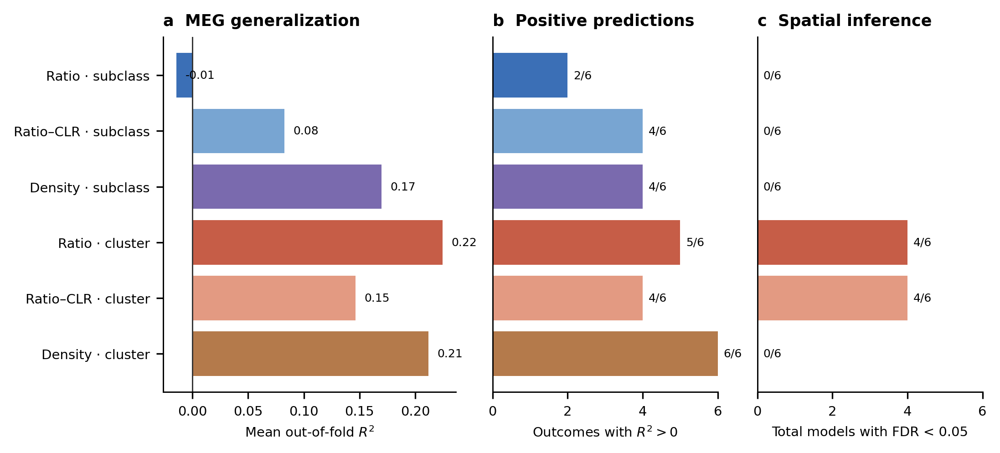
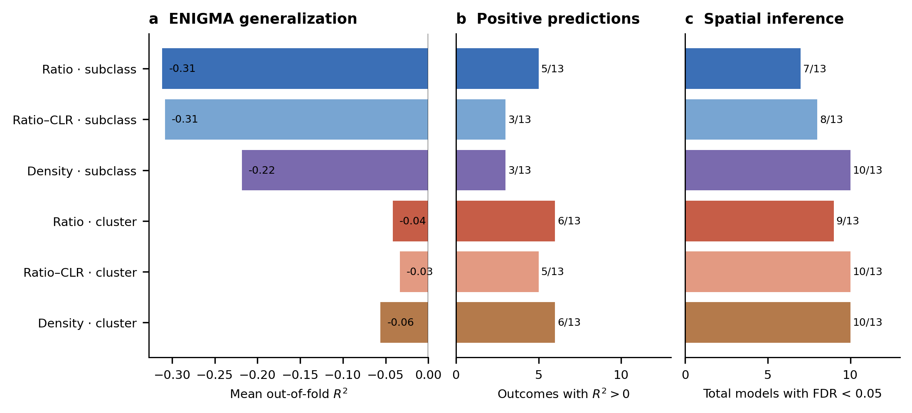
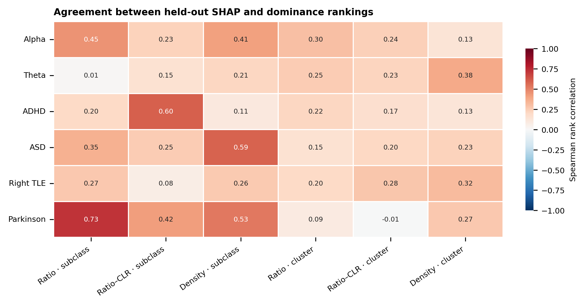

本分析检验由猕猴空间转录组推断的人类同源细胞组成，是否能够解释正常皮层振荡和疾病相关皮层厚度变化。主分析使用重标记后重新闭合的细胞比例；23个subclass用于较低维的系统解释，71个cluster用于精细候选定位。
研究对象是HomoloMap细胞图谱在两个嵌套分辨率上的解释能力。分析依次回答三个问题：细胞组成与影像表型是否具有超出空间平滑结构的整体关联；这种关系能否推广到留出的脑区；在可推广模型中，哪些细胞类群对预测贡献最大。

图1 | HomoloMap连接同源皮层细胞组成与人类MEG及疾病相关皮层图。 a，猕猴空间转录组细胞类型经转录同源映射并重标记到105个Brainnetome皮层区域。b、c，每个点同时表示同一Ridge模型的脑叶分区外预测R²和Benjamini–Hochberg校正后的空间旋转检验结果；空心外圈表示q<0.05且分区外R²>0，虚线与实线分别表示两个筛选阈值。d，仅对通过双门槛的精细cluster模型展示held-out区域的平均绝对SHAP相对贡献。subclass和cluster是同一同源映射的嵌套分辨率。SHAP表示预测依赖，不构成独立丰度效应或因果证据。
226个来源细胞类型中，191个依据转录同源关系获得精确映射，并聚合为23个subclass和71个cluster。未映射成分约占原始比例质量的11.3%；主分析删除未映射列后先在D99来源空间重新闭合，再执行D99至Brainnetome的跨物种区域重标记，并在目标空间再次闭合。每个Brainnetome区域的mapped ratio因此和为1。该变量表示“已成功映射细胞类型之间的相对组成”，不是完整组织中所有细胞的绝对比例。
每个细胞类型—影像结局组合计算Pearson相关。零假设不是普通的独立同分布随机性，而是“在保留皮层空间自相关的情况下不存在位置对应关系”。为此使用Alexander–Bloch球面旋转产生1,000个空间替代图。每个分析分支内，对同一影像结局的全部细胞类型p值使用Benjamini–Hochberg方法校正；因此该q值回答的是该结局内部所有细胞类型比较形成的发现率控制。
subclass或cluster同时进入带截距Ridge模型。观测统计量为完整数据模型R²；正则化强度由交叉验证选择。空间零分布通过旋转影像结局获得，并在每次旋转中使用固定分析流程重新拟合模型。经验p值按(extreme+1)/(1,000+1)计算，避免得到零p值。随后分别在每个分支的6个MEG频段或13个ENIGMA疾病之间实施Benjamini–Hochberg校正。该检验回答“整个细胞组成是否携带超出空间平滑结构的联合信息”，不用于评估未见区域的预测能力。
泛化能力通过五折脑叶分组交叉验证评估：同一脑叶的区域整体进入训练或测试集合，降低相邻区域同时出现在两侧造成的空间泄漏。每一外层训练折内独立估计标准化参数，并在训练数据内部选择Ridge正则化强度；测试折不参与任何预处理或参数选择。汇总全部held-out预测后计算OOF R²、Pearson相关和平均绝对误差。OOF R²>0表示优于以测试观测总体均值为基准的平方误差预测，负值则表示泛化不足。
只有总体模型空间q<0.05且OOF R²>0的组合进入正文归因。线性SHAP在每个外层模型的held-out区域计算，随后汇总绝对贡献并标准化为相对比例；因此不存在使用同一观察同时训练和解释的训练内SHAP。优势分析用于将完整模型R²在相关特征之间分配：subclass维度可作较稳定的系统解释，71维cluster的增量近似只作为候选排序。MEG与ENIGMA是两个独立多重比较家族，不合并校正；subclass与cluster也作为预先定义的不同解释分辨率分别校正。
MEG分析检验六个频段的区域功率图。按主分析的正则化总体模型，cluster层面有多个频段通过空间检验，其中Theta、Beta和Gamma 1同时获得正向脑叶分区外预测；subclass模型未形成相同强度的总体空间证据。该模式提示细粒度转录亚群能够分辨部分频率特异的空间组织，但并非所有训练内拟合较高的频段都具有泛化能力。
| 频段 | 细胞分辨率 | 分区外R² | 空间q | 预测相关 |
|---|---|---|---|---|
| Theta | cluster | 0.305 | 0.0084 | 0.701 |
| Beta | cluster | 0.133 | 0.0259 | 0.751 |
| Gamma 1 | cluster | 0.060 | 0.0365 | 0.428 |
这些结果支持“频率相关的细胞组成结构”这一空间统计解释，但不说明细胞比例直接产生某一振荡频率。SHAP所标记的SST、VIP、Chandelier或其他精细cluster是模型依赖的候选来源，需要独立数据验证。
ENIGMA分析以13种疾病的皮层厚度效应图作为结局。ADHD、颞叶癫痫、帕金森病及部分其他表型在至少一个细胞分辨率上同时获得空间证据和正向分区外预测。subclass结果适合描述较宽的细胞系统；cluster结果则进一步区分同一系统内部的转录亚群。
| 疾病 | 细胞分辨率 | 分区外R² | 空间q | 预测相关 |
|---|---|---|---|---|
| Right TLE | cluster | 0.618 | 0.0076 | 0.789 |
| ADHD | subclass | 0.552 | 0.0095 | 0.760 |
| Parkinson | cluster | 0.428 | 0.0114 | 0.661 |
| ADHD | cluster | 0.406 | 0.0047 | 0.710 |
| Parkinson | subclass | 0.358 | 0.0285 | 0.627 |
| ASD | cluster | 0.355 | 0.0047 | 0.629 |
| Right TLE | subclass | 0.271 | 0.0095 | 0.616 |
| OCD | cluster | 0.056 | 0.0081 | 0.421 |
| Left TLE | subclass | 0.026 | 0.0298 | 0.267 |
疾病效应图来自独立的大规模病例—对照研究，因此这里的关系应解释为不同数据源之间的空间收敛。它能够提出与疾病皮层易感性相关的细胞候选，但不能区分细胞组成是病因、结果还是共同空间梯度的标记。
总体优势分析回答完整模型的解释度如何在相关特征之间分配；held-out SHAP回答每个细胞特征对未见脑区预测的平均贡献。两者受到特征共线性和组成约束影响，均不等同于某一细胞类型的独立生物学效应。正文优先报告subclass层面的稳定系统模式，并将cluster作为更精细、可实验验证的候选列表。
MEG空间组织。 Hansen等整合多种神经递质受体图谱后发现，皮层受体空间分布能够解释六个经典MEG频段的区域功率，并使用空间旋转、距离约束交叉验证和优势分析限制空间自相关与共线性的影响。这一工作支持“皮层微观分子或细胞构成与振荡拓扑相关”的一般框架，但其预测变量是受体密度而不是HomoloMap细胞比例，因此只能支持分析策略和跨尺度假设，不能视为本研究结果的直接复现（Hansen et al., Nature Neuroscience, 2022）。独立MEG研究还显示，静息态峰值频率沿皮层层级呈系统性空间梯度，并与皮层厚度梯度相关，提示本研究必须采用保留空间结构的零模型，而不能使用普通参数检验（Mahjoory et al., eLife, 2020）。
ENIGMA疾病皮层厚度。 ENIGMA的virtual histology研究发现，六类精神疾病的区域皮层厚度差异与锥体细胞、星形胶质细胞和小胶质细胞相关基因表达图具有空间对应关系，三类细胞表达共同解释了25%–54%的区域差异。这为疾病皮层形态具有细胞类型相关空间组织提供支持，也与本研究在神经元和胶质cluster中观察到候选贡献相容；但该研究使用基因表达代理而非直接细胞比例，而且分析疾病集合与本研究并不完全相同（Patel et al., JAMA Psychiatry, 2021）。22q11.2缺失综合征的影像转录组研究进一步展示了区域皮层异常与基因表达空间收敛可用于候选基因优先级排序，支持把当前结果定位为候选生成而非病因证明（Forsyth et al., Molecular Psychiatry, 2021）。
跨物种同源映射。 多灵长类单核转录组研究表明，大多数转录定义的细胞亚型跨人、黑猩猩、猕猴和狨猴具有可识别的保守性，同时也存在物种特异亚型和同源类型内部的分子差异。这同时支持HomoloMap利用转录同源关系进行映射的生物学基础，并界定其边界：同源标签不意味着空间比例或全部分子状态在人与猕猴之间完全相同（Ma et al., Science, 2022）。猕猴空间多组学研究也证明分子状态可以在皮层区域中定位，并揭示人—猕猴胶质轨迹的相似性与差异，为空间细胞图谱的跨物种比较提供进一步依据（Zhu et al., Nature Neuroscience, 2022）。
| 分支 | 特征数 | 映射比例 | 未映射质量 | 平均OOF R² | 正OOF结局数 | 总体FDR显著数 |
|---|---|---|---|---|---|---|
| density_none_subclass | 24 | 0.825 | 0.112 | -0.096 | 7 | 9 |
| ratio_clr_subclass | 23 | 0.845 | 0.113 | -0.185 | 7 | 7 |
| ratio_none_subclass | 23 | 0.845 | 0.113 | -0.218 | 7 | 7 |
| density_none_cluster | 72 | 0.825 | 0.112 | 0.029 | 12 | 12 |
| ratio_clr_cluster | 71 | 0.845 | 0.113 | 0.023 | 9 | 14 |
| ratio_none_cluster | 71 | 0.845 | 0.113 | 0.042 | 11 | 13 |
该表用于确认每个分支使用的映射覆盖、特征维度和整体行为。ratio-none是正文主分析；ratio-CLR与density不参与正文结果排序。

补充图S1。 Ratio主分析中MEG与ENIGMA全部结局的空间总体检验和脑叶分区外预测。图形同时显示空间q值、OOF R²及进入归因的双门槛结果。

补充图S2。 通过双门槛的主要结局及其预测证据，用于区分空间显著但不能推广的模型与具有留出预测能力的模型。
| 结局 | 分辨率 | 完整R² | spin p | 家族q | OOF R² | OOF r | 决策 |
|---|---|---|---|---|---|---|---|
| Alpha | cluster | 0.963 | 0.0440 | 0.0597 | 0.639 | 0.833 | 未通过双门槛 |
| Alpha | subclass | 0.898 | 0.0240 | 0.0569 | 0.516 | 0.752 | 未通过双门槛 |
| Beta | cluster | 0.950 | 0.0150 | 0.0259 | 0.133 | 0.751 | 进入归因 |
| Beta | subclass | 0.849 | 0.2667 | 0.3379 | -0.292 | 0.658 | 未通过双门槛 |
| Delta | cluster | 0.910 | 0.0220 | 0.0348 | -0.106 | 0.435 | 未通过双门槛 |
| Delta | subclass | 0.810 | 0.0909 | 0.1570 | -0.201 | 0.410 | 未通过双门槛 |
| Gamma 1 | cluster | 0.928 | 0.0250 | 0.0365 | 0.060 | 0.428 | 进入归因 |
| Gamma 1 | subclass | 0.681 | 0.3906 | 0.4366 | -0.115 | 0.253 | 未通过双门槛 |
| Gamma 2 | cluster | 0.817 | 0.1918 | 0.2025 | 0.317 | 0.586 | 未通过双门槛 |
| Gamma 2 | subclass | 0.731 | 0.1828 | 0.2672 | 0.229 | 0.542 | 未通过双门槛 |
| Theta | cluster | 0.957 | 0.0040 | 0.0084 | 0.305 | 0.701 | 进入归因 |
| Theta | subclass | 0.734 | 0.0539 | 0.1139 | -0.223 | 0.282 | 未通过双门槛 |
| 结局 | 分辨率 | 完整R² | spin p | 家族q | OOF R² | OOF r | 决策 |
|---|---|---|---|---|---|---|---|
| 22q11.2 | cluster | 0.594 | 0.2547 | 0.2547 | -0.789 | -0.605 | 未通过双门槛 |
| 22q11.2 | subclass | 0.498 | 0.4995 | 0.5273 | -0.852 | -0.661 | 未通过双门槛 |
| ADHD | cluster | 0.798 | 0.0010 | 0.0047 | 0.406 | 0.710 | 进入归因 |
| ADHD | subclass | 0.830 | 0.0010 | 0.0095 | 0.552 | 0.760 | 进入归因 |
| ASD | cluster | 0.967 | 0.0010 | 0.0047 | 0.355 | 0.629 | 进入归因 |
| ASD | subclass | 0.913 | 0.0010 | 0.0095 | -0.313 | 0.029 | 未通过双门槛 |
| Bipolar | cluster | 0.813 | 0.0509 | 0.0645 | -0.339 | 0.200 | 未通过双门槛 |
| Bipolar | subclass | 0.493 | 0.2947 | 0.3500 | -1.296 | -0.017 | 未通过双门槛 |
| Depression | cluster | 0.895 | 0.0010 | 0.0047 | -0.040 | 0.466 | 未通过双门槛 |
| Depression | subclass | 0.775 | 0.0040 | 0.0152 | -0.234 | 0.299 | 未通过双门槛 |
| Generalized epilepsy | cluster | 0.359 | 0.1788 | 0.1999 | -0.188 | -0.113 | 未通过双门槛 |
| Generalized epilepsy | subclass | 0.225 | 0.1499 | 0.2373 | -0.317 | -0.207 | 未通过双门槛 |
| Left TLE | cluster | 0.860 | 0.0010 | 0.0047 | -0.057 | 0.235 | 未通过双门槛 |
| Left TLE | subclass | 0.659 | 0.0110 | 0.0298 | 0.026 | 0.267 | 进入归因 |
| Right TLE | cluster | 0.925 | 0.0020 | 0.0076 | 0.618 | 0.789 | 进入归因 |
| Right TLE | subclass | 0.881 | 0.0020 | 0.0095 | 0.271 | 0.616 | 进入归因 |
| Obesity | cluster | 0.830 | 0.0040 | 0.0084 | -0.902 | 0.124 | 未通过双门槛 |
| Obesity | subclass | 0.827 | 0.0020 | 0.0095 | -0.869 | 0.003 | 未通过双门槛 |
| OCD | cluster | 0.761 | 0.0030 | 0.0081 | 0.056 | 0.421 | 进入归因 |
| OCD | subclass | 0.135 | 0.1978 | 0.2684 | -0.234 | 0.062 | 未通过双门槛 |
| Parkinson | cluster | 0.808 | 0.0060 | 0.0114 | 0.428 | 0.661 | 进入归因 |
| Parkinson | subclass | 0.757 | 0.0090 | 0.0285 | 0.358 | 0.627 | 进入归因 |
| Schizophrenia | cluster | 0.899 | 0.0030 | 0.0081 | -0.235 | 0.359 | 未通过双门槛 |
| Schizophrenia | subclass | 0.158 | 0.6833 | 0.6833 | -1.431 | 0.005 | 未通过双门槛 |
| Schizotypy | cluster | 0.384 | 0.0589 | 0.0700 | 0.145 | 0.390 | 未通过双门槛 |
| Schizotypy | subclass | 0.608 | 0.0669 | 0.1272 | 0.288 | 0.542 | 未通过双门槛 |
“进入归因”严格表示总体q<0.05且OOF R²>0，并不等于因果性或临床预测有效性。
| 表型家族 | 分辨率 | 检验数 | 结局内FDR显著数 |
|---|---|---|---|
| ENIGMA | cluster | 923 | 27 |
| ENIGMA | subclass | 299 | 12 |
| MEG | cluster | 426 | 3 |
| MEG | subclass | 138 | 5 |

补充图S3。 Ratio主分析在subclass层面的held-out SHAP贡献。仅展示通过空间总体检验与正向留出预测双门槛的模型，贡献表示模型对未见脑区预测的依赖。
每个单变量结果的相关系数、spin p、结局内BH q和有效旋转次数保存在各主分支的 spin.csv。单变量显著性用于描述空间对应，不能替代总体模型或留出预测。

补充图S4。 MEG在ratio、CLR和density分支中的总体与预测结果概览。

补充图S5。 ENIGMA在ratio、CLR和density分支中的总体与预测结果概览。
CLR回答结果是否依赖闭合组成的绝对坐标；density回答更接近细胞丰度尺度的连续特征是否产生相似结果。二者的分母和解释单位不同，因此不与ratio合并计算总体显著性，也不根据三种表示中最小p值选择结论。

补充图S6。 不同分析分支中优势贡献与held-out SHAP排序的一致性。低一致性提示相关特征之间的贡献分配具有方法依赖性。
每个分支均保存 performance.csv、folds.csv、oof_predictions.csv、total_models.csv、dominance.csv和oof_shap.csv。正文只展示双门槛通过的归因；完整特征排序应作为Source Data或补充数据表提供。
| 补充项目 | 内容 | 目的 |
|---|---|---|
| Supplementary Methods | 映射、闭合、空间旋转、多重比较与分区外预测 | 集中说明完整统计流程 |
| Supplementary Fig. S1–S6 | 全部结局、CLR/density敏感性及归因一致性 | 用图呈现完整性与稳健性 |
| Supplementary Data 1 | 单变量spin、总体模型、OOF预测及fold定义 | 支持结果与统计复核 |
| Supplementary Data 2 | 全部dominance与held-out SHAP贡献 | 支持细胞候选复核 |
分析范围：Brainnetome 105个皮层区域；1,000次空间旋转；五折脑叶分组预测；主特征为重标记后重新闭合的mapped ratio。结果是空间关联和预测性解释，不是因果推断。